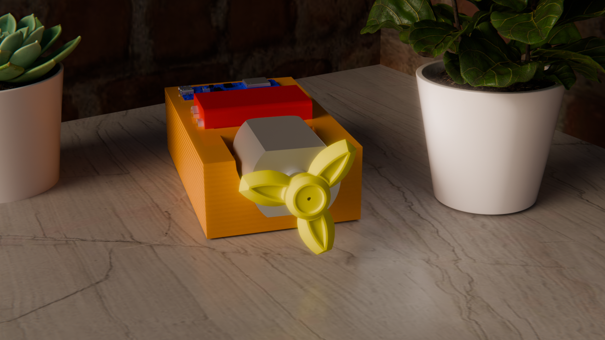

Predictive Maintenance with Cutting-Edge Technology
The Vibration Monitor project leverages recent advancements in TinyML to deliver an innovative, cost-effective solution for predictive maintenance through advanced vibration analysis. Unlike traditional condition monitoring systems that rely on expensive external sensors, this project utilizes the onboard Inertial Measurement Unit (IMU) of the Arduino Nano 33 BLE Sense, enabling direct and efficient vibration analysis.
By harnessing accelerometer and gyroscope data, a machine learning model was developed and trained on the Edge Impulse platform to classify operational states into "normal," "abnormal," and "idle" categories, achieving an impressive accuracy of 99%. The model employs a 1D Convolutional Neural Network (CNN) architecture, optimized for low-power, real-time inference on resource-constrained devices. Integrated with Bluetooth Low Energy (BLE), the system transmits predictions to a user-friendly dashboard, facilitating proactive maintenance decisions to minimize downtime, enhance machinery reliability, and reduce operational costs.
The next phase of development focuses on expanding the model’s capabilities to include multifault recognition including faults of shaft mis-alignment, bearing fault, imbalance and mechanical joint faults, enabling the identification and classification of multiple fault types for even more comprehensive predictive maintenance.
Prediction: No data yet
Confidence: N/A